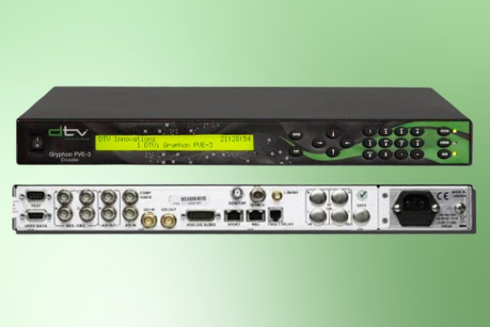

1. Peringatan Keselamatan Kerja (K3)
PERHATIAN! IP CONFLICT & KONFIGURASI
- Pastikan IP Management yang Anda atur unik dan tidak dipakai oleh perangkat lain di jaringan (IP Conflict).
- Pastikan sumber sinyal (misal: dari MCR) memiliki format (Resolusi & Frame Rate) yang didukung oleh encoder.
- Selalu klik 'Apply' atau 'Save' setelah mengubah pengaturan di WebGUI sebelum pindah ke menu lain.
2. Prosedur Koneksi Awal
- Hubungkan kabel sumber video (misal: SDI In 1) dari MCR ke encoder.
- Hubungkan kabel LAN (RJ45) dari port 'Management' di encoder ke Laptop/PC (untuk konfigurasi awal) atau ke Jaringan LAN.
- Hubungkan kabel output (misal: ASI Out atau IP/Data Port) ke MUX atau Jaringan.
- Hubungkan kabel power dan nyalakan encoder (jika ada tombol power, jika tidak alat akan otomatis menyala).
3. Prosedur Konfigurasi (WebGUI)
IP Address default pabrikan untuk DTV Innovations PVE-2 biasanya **192.168.1.200**.
- Atur IP Address Laptop/PC Anda ke segmen yang sama (misal: 192.168.1.10, Subnet 255.255.255.0).
- Buka Browser (Chrome/Firefox) dan ketik IP default: `http://192.168.1.200`.
- Masuk menggunakan username dan password default (misal: admin/admin).
- Konfigurasi Input:
- Masuk ke menu `Configuration -> Input`.
- Pilih 'Input Source' (misal: SDI 1).
- Pastikan status 'Input Locked' atau 'Signal Detected' (menunjukkan sinyal video masuk).
- Konfigurasi Video:
- Masuk ke `Configuration -> Video`.
- Pilih Codec (misal: H.264/AVC atau MPEG-2).
- Atur Bitrate (misal: 4000 Kbps), Resolusi (misal: 1920x1080i), dan Profile.
- Konfigurasi Audio:
- Masuk ke `Configuration -> Audio`.
- Pilih Audio Source (misal: Embedded SDI).
- Pilih Codec (misal: AAC atau MPEG-1 Layer II) dan Bitrate (misal: 192 Kbps).
- Konfigurasi Output (Contoh: IP Multicast):
- Masuk ke `Configuration -> Output -> IP Stream 1`.
- Centang 'Enable Stream'.
- Atur 'Destination IP' (IP Multicast, misal: 239.0.0.1) dan 'Destination Port' (misal: 5000).
- Pastikan 'Stream Type' adalah 'UDP' atau 'RTP'.
- Klik tombol 'Apply' atau 'Save' untuk menyimpan semua konfigurasi.
- Periksa menu `Status -> Dashboard` untuk melihat status input, encoding, dan output stream.
4. Checklist Konfigurasi (Interaktif)
5. Troubleshooting
Apa masalah Anda?
6. Galeri Foto
